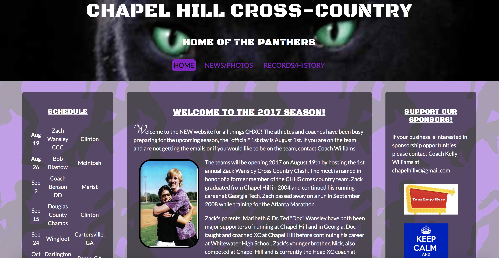
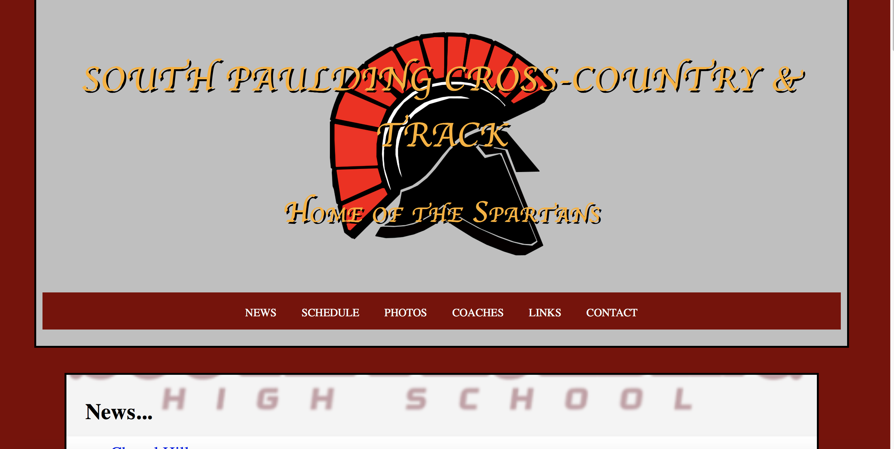
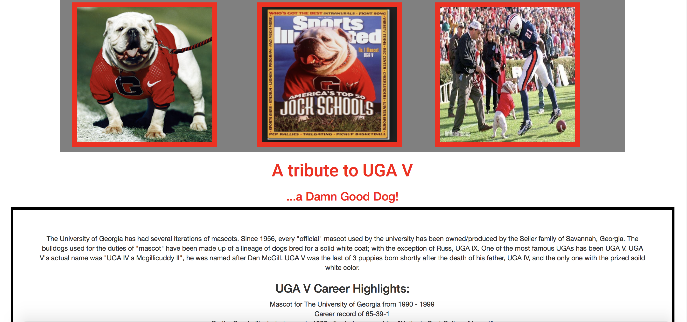

<Links to some recent work...>
-

Website for Chapel Hill High School Track and Cross Country Teams
-

Website for South Paulding High School Track and Cross Country Teams
-

An app using the MARTA api to locate nearby buses. Used Ruby, Rails, JavaScript, and Bootstrap. Deployed to Heroku.
-

Tribute page for UGA V, designed using codepen.io.
-

If you wanna see how the sausage is made...check out my source code on my Github page. Some repos are examples of my work while attending TTS and others are personal projects.